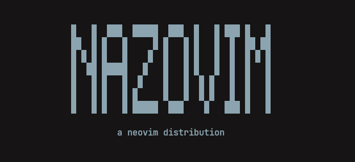

a neovim distribution by nazozokc
nix run github:NazoVim-org/NazoVim
nix develop github:NazoVim-org/NazoVim
git clone https://github.com/NazoVim-org/NazoVim.git ~/.config/nvim
Everything you need. Nothing you don't.
VeryLazy 以降に追いやる。kanagawa-dragon テーマ + 透明背景。ターミナルと完全に溶け込む洗練された見た目。claudecode.nvim + opencode.nvim。nix run で隔離起動。nix develop で LSP 完備の devShell。既存設定を汚さない。nvim-dap + vscode-js-debug。Carefully curated. Aggressively lazy-loaded.
| Plugin | Purpose |
|---|---|
| nvim-lspconfig + mason | LSP management |
| typescript-tools.nvim | TypeScript LSP (optimized) |
| nvim-cmp | Completion engine |
| LuaSnip + denippet.vim | Snippets (VSCode-compatible) |
| lspsaga.nvim | LSP UI enhancements |
| conform.nvim | Formatter (stylua / prettier etc.) |
| fidget.nvim | LSP progress display |
| tiny-inline-diagnostic.nvim | Inline diagnostics |
| lazydev.nvim | Lua/Neovim API completion |
| Plugin | Purpose |
|---|---|
| snacks.nvim | Picker / Dashboard / Zen / Session |
| telescope.nvim | Fuzzy finder (secondary) |
| oil.nvim | Buffer-based file explorer |
| neo-tree.nvim | Tree-style file explorer |
| yazi.nvim | yazi file manager integration |
| flash.nvim | Smart jump |
| aerial.nvim | Symbol outline |
| dropbar.nvim | Winbar / breadcrumbs |
| Plugin | Purpose |
|---|---|
| kanagawa.nvim | Color scheme (dragon + transparent) |
| lualine.nvim | Status line |
| barbar.nvim | Tab bar |
| noice.nvim | Command line UI / notifications |
| modes.nvim | Mode-dependent cursor color |
| render-markdown.nvim | Rich Markdown rendering |
| nvim-highlight-colors | Inline color code preview |
| incline.nvim | Floating filename |
| Plugin | Purpose |
|---|---|
| gitsigns.nvim | Git diff sign column |
| diffview.nvim | Diff view / file history |
| lazygit.nvim | LazyGit integration |
| vim-fugitive | Git operations |
| octo.nvim | GitHub Issue / PR / Notification |
| Plugin | Purpose |
|---|---|
| nvim-treesitter | Syntax highlight / indent |
| nvim-treesitter-textobjects | Function / class / argument textobjects |
| nvim-autopairs | Auto bracket completion |
| mini.ai / surround / comment | Textobjects / Surround / Comments |
| nvim-spider | CamelCase/snake_case w/e/b |
| dial.nvim | Extended C-a/C-x increment |
| which-key.nvim | Keymap help |
| toggleterm.nvim | Floating terminal |
| Plugin | Purpose |
|---|---|
| claudecode.nvim | Claude Code integration |
| opencode.nvim | opencode integration |
| CopilotChat.nvim | GitHub Copilot Chat |
| copilot.lua | GitHub Copilot completion |
| nvim-dap + nvim-dap-ui | Debugger |
| neotest | Test runner (jest / vitest / playwright) |
Thoughtfully mapped. Muscle-memory ready.
| <Leader><Leader> | File search (snacks Picker) |
| <Leader>g | Live Grep |
| <Leader>b | Buffer list |
| <Leader>r | Recent files |
| <Leader>h | Clear search highlight |
| <Leader>z | Zen mode |
| <Leader>m | Oil file explorer |
| <Leader>n | Neo-tree |
| <Leader>t | Floating terminal |
| <Leader>f | Format buffer |
| K | Hover |
| gd | Go to definition |
| ga | Code action (Lspsaga) |
| <Leader>ca | Code action (preview) |
| <Leader>gr | References |
| <Leader>oi | Organize imports (TS) |
| <Leader>ru | Remove unused (TS) |
| <Leader>gd | DiffviewOpen |
| <Leader>gh | File history |
| <Leader>gH | Branch history |
| <Leader>gc | Diffview Close |
| <Leader>gp | Preview hunk |
| <Leader>gt | Blame toggle |
| <Leader>ac | Toggle Claude Code |
| <Leader>af | Focus Claude Code |
| <Leader>ab | Add current buffer |
| <C-a> | opencode ask |
| <C-x> | opencode select action |
| <C-.> | opencode toggle |
| <F5> | Continue |
| <F10> | Step over |
| <F11> | Step into |
| <F12> | Step out |
| <Leader>db | Toggle breakpoint |
| <Leader>du | DAP UI toggle |
| <C-h/j/k/l> | Window navigation (tmux-aware) |
| <C-PageDown/Up> | Buffer switch |
| <C-t> | New buffer |
| <C-q> | Close buffer |
Pick your method. Start editing in minutes.
設定を ~/.config/nvim-nazozokc に隔離展開。既存の Neovim 設定を一切汚さない。
nix run github:nazozokc/nazozokc.nvim.config
LSP とフォーマッターが揃った devShell に入る。NVIM_APPNAME が自動でセットされる。
nix develop github:nazozokc/nazozokc.nvim.config
nvim
Nix 不要。初回起動時に lazy.nvim が全プラグインを自動インストール。バックアップ推奨。
git clone https://github.com/nazozokc/
nazozokc.nvim.config.git ~/.config/nvim
nvim